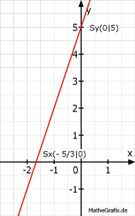

Lineare Funktionen Aufgabe 50 In welchen Punkten schneiden die Geraden die Koordinatenachsen? y = 3x + 5 Für alle Punkte auf der y-Achse gilt x = 0 Für alle Punkte auf der x-Achse gilt y = 0 y = 3 * 0 + 5 = 5 Sy(0|5) 0 = 3x + 5 | -5 3x = -5 | :3 5 x = - --- 3 5 Sx( - --- |0) 3 